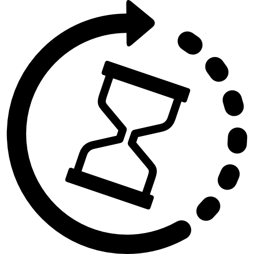
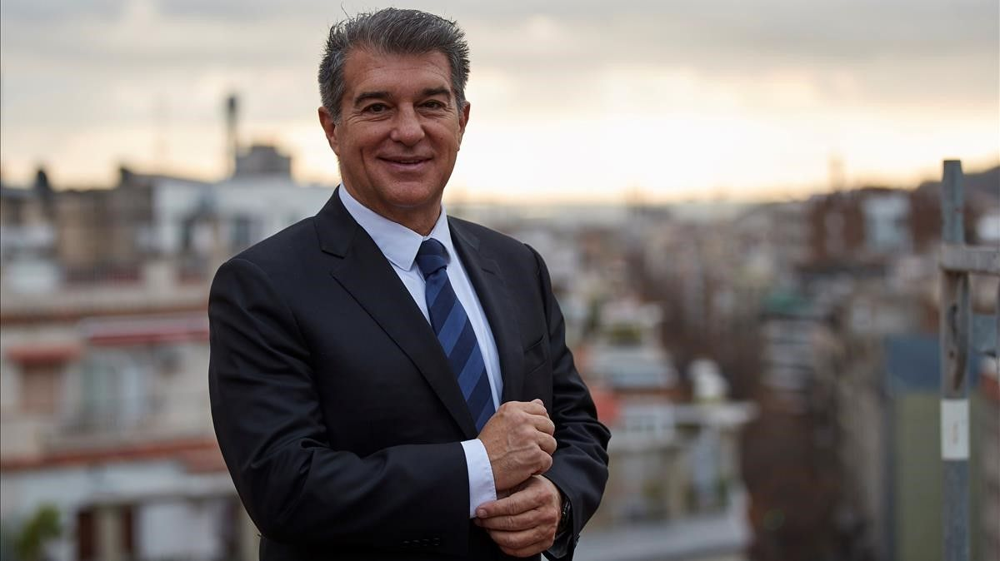

Noticias
El Barcelona estrenará una camiseta especial para el Clásico, con Puyol como imagen
Ansu Fati, candidato a deportista revelación en los premios Laureus
Leo Messi, mejor jugador del mes de febrero en la Liga
Koeman y su apuesta por seis jovenes para una nueva generación en Barcelona
Joan Laporta es nuevo presidente del Barcelona

Los seis fichajes de Laporta para devolver la grandeza al Barcelona
Esta vez el Barcelona salió de Europa con la cabeza muy alta
Koeman: "Todos los aficionados del Barcelona deben estar orgullosos de la imagen que hemos dado
Filtrada la primera imagen de la camiseta del Barcelona 21-22
Erling Haaland, la gran prioridad de Joan Laporta para el FC Barcelona 2021-2022
Síguenos en: